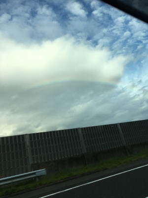
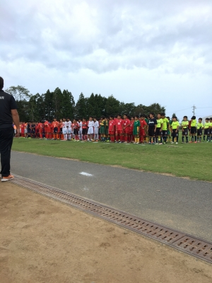
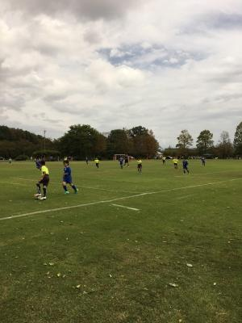

石川遠征 2016-10
先週末10月8～9日は、ハルのサッカー遠征へ。
石川県小松市「木場潟公園杯少年サッカー大会」に参加しました。
天気予報は雨・・・5時半に集合場所から出発した時には
雨がしとしと降っていましたが・・・
名阪から北陸自動車道に入って、福井県に入った頃、
雨はやんで虹が見えました。

晴れ男(←ハルとダンナ)パワー、すげ～(笑)。
今回の大会、Jの下部組織も参加してたりして、ちょっとドキドキ(笑)。
ま。1ヶ月サボってたウチのおバカ男子は
どこまで出来るか・・・なんか想像はできましたけどね～(汗)。
「遠征は参加することに意義がある ! 経験は宝だ ! 」
↑の精神で(笑)行って来ましたよ。

1日目は3試合。
グループ4チームでリーグ戦をしました。
大宮アルディージャとやれたんだけど・・・8-0で負け・・・(泣)
力の差を見せられましたね～。
「強い」と言われるチームは、テクニックやスピードはもちろんだけど
それよりもまず、何より根性がありますね。
絶対あきらめないし、最後まで全力で走ってる。
やっぱり「ココロ」が強いのね。最終的にはそこなのね・・・。

翌日は天候も回復に向かい、
予定していた日程もすべて順調に消化できました。
2日目は1日目の結果を踏まえたトーナメントで3試合、
プラス、フレンドリーマッチ1試合。
今回参加した大会は、若干残念な結果に終わったけど、
強いチームと試合もできてよかったんじゃないかと思います。
泊まりでの遠征も2回目で、今回はちゃんと夜も寝られたようだしね(笑)。
ハルについては・・・予想はできたけど(汗)
試合勘は鈍ってるし、走れないし、ボールが足についてこないし
・・・さんざんでしたね(涙)。
本人も「全く身体が言うことをきいてくれなかった。」
と言ってましたケド(笑)。
「1ヶ月もサボったら、ふつーはこーなるんだよっ !! わかったか ! 」
大会優勝は大宮アルディージャ。
優勝チームと試合させてもらえたんだから、それだけでもよかったんじゃない ?
大宮の心の強さを直に肌で感じたでしょ ?
経験したことが糧になって、いつかこの先
美しい大輪の花を咲かせることができるように祈ってるよ !